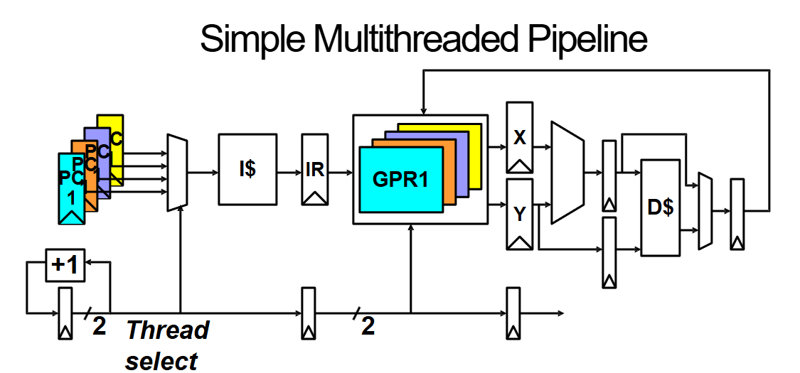
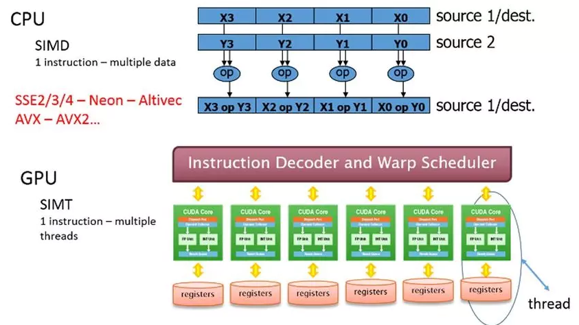

Parallel Computing
Parallel architecture refers to a computer system design that allows multiple processors or computing units to execute tasks concurrently. This approach improves performance, efficiency, and scalability by leveraging parallelism at several levels.
Parallelism in computing is the practice of executing multiple computations simultaneously by dividing work into smaller sub-tasks that can be processed independently. Modern systems use various forms of parallelism to meet the demands of complex and data‐intensive applications.
Flynn’s Taxonomy of Parallel Architectures
Flynn’s Taxonomy classifies computer architectures based on how instructions and data are processed.

| Category | Description | Usage Examples |
|---|---|---|
| SISD (Single Instruction, Single Data) | Traditional sequential processing: one instruction operates on one data element at a time. | Early CPUs, simple microcontrollers |
| SIMD (Single Instruction, Multiple Data) | A single instruction is simultaneously applied to multiple data elements. | GPUs, vector processors, deep learning accelerators |
| MISD (Multiple Instruction, Single Data) | Multiple instructions process the same data stream. This model is rarely used in practice. | Fault-tolerant systems in critical applications (e.g., redundant military systems) |
| MIMD (Multiple Instruction, Multiple Data) | Different processors execute different instructions on separate data streams. | Multi-core CPUs, distributed computing, cloud systems |
Modern systems often blend characteristics of SIMD and MIMD, creating hybrid architectures that balance flexibility with high throughput. For example, GPUs integrate both data-level and thread-level parallelism to handle a variety of workloads.
Types of Parallelism
Parallelism can be categorized into different types based on how tasks are executed. Two fundamental types are temporal parallelism (pipelining) and spatial parallelism.
Temporal Parallelism (Pipelining)
Temporal parallelism divides a task into sequential stages that can be overlapped, improving overall throughput. A great way to understand this is through a cookie-baking process:
- Without parallelism: You roll out the dough (5 min) and then bake it (15 min), taking 20 minutes per batch.
- With pipelining: While the first batch is baking, you start preparing the next one. This doesn’t change the time required for a single batch but allows continuous production, reducing the wait time between finished batches.
This analogy mirrors how CPUs execute instructions in a pipeline, where different stages (fetch, decode, execute, etc.) are processing different instructions simultaneously. Just like a baker needs separate trays to avoid mixing batches, processors use pipeline registers to store intermediate data. While the total time for the first output remains the same, subsequent results come out much faster, boosting overall performance.
 Source: Dr. Chen Pan (UTSA)
Source: Dr. Chen Pan (UTSA)
Spatial Parallelism
Spatial parallelism, on the other hand, involves executing tasks simultaneously using separate hardware units. Instead of working in stages, tasks run in parallel from the start.
Imagine Ben has a helper and an extra oven. Now, two batches can be processed at the same time—effectively doubling throughput while keeping the time per batch unchanged.
This type of parallelism is commonly seen in:
- Multithreaded systems: Where independent threads run on separate cores.
- GPU architectures: Which execute many threads in parallel using a SIMT (Single Instruction, Multiple Threads) model.
Types of Processing
Processing refers to how a CPU executes instructions.
Scalar Processing
A scalar CPU executes one instruction at a time. This category includes pipelined processors, which improve instruction throughput by overlapping the execution of multiple instructions through different stages of processing. However, despite the efficiency gains from pipelining, a scalar processor fundamentally handles only one operation per cycle.
Vector Processing
A vector CPU also executes one instruction at a time, but it operates on vector data instead of single scalar values. This allows the processor to perform computations on multiple elements simultaneously. For example, the instruction:
X[0:7] + Y[0:7]
performs element-wise addition on two vectors of eight elements in a single operation. On a scalar processor, this would require eight separate instructions to achieve the same result.
Superscalar Processing
A superscalar CPU is capable of executing multiple unrelated instructions simultaneously. It achieves this by having multiple execution units that can work in parallel. For example, a superscalar processor could execute the following two instructions concurrently:
ADD X + Y
MUL W * Z
This parallelism increases overall instruction throughput and efficiency, making superscalar processors well-suited for high-performance computing applications.
Understanding Instruction-Level Parallelism (ILP)
What is ILP?
Instruction-Level Parallelism (ILP) refers to the extent to which multiple instructions in a program can be executed simultaneously. ILP is an attribute of the program, meaning it depends on the nature of the instructions, the Instruction Set Architecture (ISA), and how well the compiler organizes the code for parallel execution.
ILP vs. IPC
While ILP describes the potential parallelism within a program, Instructions Per Cycle (IPC) measures the actual instruction throughput of a processor. The key differences are:
- ILP is theoretical: It represents the maximum parallelism that can be extracted from a program.
- IPC is practical: It depends on the actual hardware implementation and various runtime factors.
- ILP sets an upper bound on IPC, but the achievable IPC is limited by hardware constraints such as instruction latencies, cache behavior, and processor execution capabilities.
Hazards and Dependencies
To effectively exploit ILP, we must understand various hazards (situations that prevent parallel execution). The three main types of dependencies that cause hazards are:
1. Data Dependencies
Data dependencies occur when an instruction depends on the result of a previous instruction. There are three types:
- True Dependency (Read After Write, RAW): The second instruction needs data produced by the first instruction.
ADD R1, R2, R3 # R1 = R2 + R3
SUB R4, R1, R5 # R4 = R1 - R5 (Depends on ADD result)
- Anti Dependency (Write After Read, WAR): The second instruction writes to a register before the first instruction reads it.
SUB R1, R2, R3 # Reads R2
ADD R2, R4, R5 # Writes to R2 before SUB reads it
- Output Dependency (Write After Write, WAW): Two instructions write to the same register.
MUL R1, R2, R3 # Writes to R1
ADD R1, R4, R5 # Also writes to R1, causing a conflict
2. Control Dependencies
Control dependencies occur when an instruction’s execution depends on the outcome of a previous branch instruction.
BEQ R1, R2, LABEL # If R1 == R2, jump to LABEL
ADD R3, R4, R5 # Only executed if branch is not taken
Processors use branch prediction and speculative execution to mitigate control dependencies, but incorrect predictions lead to performance penalties due to pipeline flushes.
3. Memory Dependencies
Memory dependencies arise when multiple instructions access memory, potentially causing conflicts:
- Load After Store (Read After Write, RAW):
STORE R1, 0(R2) # Store R1 at memory address in R2
LOAD R3, 0(R2) # Read from the same memory location
The processor must ensure the store completes before the load.
- Store After Load (Write After Read, WAR):
LOAD R1, 0(R2) # Load value from memory
STORE R3, 0(R2) # Store a new value at the same address
If reordered improperly, the store might overwrite a value before it is used.
- Store After Store (Write After Write, WAW):
STORE R1, 0(R2) # Write value to memory
STORE R3, 0(R2) # Write a different value to the same address
The second store must execute in the correct order to maintain program correctness.
Why ILP Matters
ILP is fundamental to modern processor design as it enables higher performance without increasing clock speeds. Exploiting ILP efficiently can lead to significant improvements in throughput, power efficiency, and execution speed. However, real-world execution is constrained by hardware limitations and hazards such as data, control, and memory dependencies.
Understanding ILP also ties into broader topics like superscalar architectures, out-of-order execution, speculative execution, and multi-threading. Techniques like register renaming, branch prediction, and speculative execution help mitigate dependency issues and increase IPC, making processors more efficient.
In the evolution of computing, ILP has been a key driver behind performance gains. While traditional single-core processors aimed to maximize ILP within a single thread, modern computing often combines ILP with thread-level parallelism (TLP) and data-level parallelism (DLP) to achieve even greater performance scalability.
Understanding Thread-Level Parallelism (TLP)
Why TLP Matters
As extracting additional ILP from a single sequential thread becomes increasingly difficult, modern architectures have shifted toward Thread-Level Parallelism (TLP) to enhance performance. TLP allows multiple threads to execute concurrently, improving processor utilization and throughput.
Types of TLP
- TLP from Multiprogramming: The processor executes multiple independent programs by switching between them, optimizing CPU usage by reducing idle time. This is beneficial in operating systems that need to handle multiple user applications simultaneously, such as running a web browser, a music player, and background system tasks concurrently.
- TLP from Multithreaded Applications: A single program is divided into multiple concurrent threads, each executing a portion of the task simultaneously. This enhances performance for applications requiring high responsiveness or heavy computation, such as video processing, gaming engines, web servers handling multiple client requests, and parallel database transactions.
How Multithreading Uses TLP
Multithreading enables processors to execute multiple threads in parallel, improving utilization of resources. This is particularly useful when individual threads face stalls (e.g., waiting for memory access).
 Source: Dr. Chen Pan (UTSA)
Each thread maintains its own user state, including:
- Program Counter (PC)
- General-Purpose Registers (GPRs)
- Stack and Memory Context
Flynn’s Taxonomy
Flynn’s Taxonomy categorizes computer architectures based on instruction and data processing.
| Category | Description | Usage Examples |
|---|---|---|
| SISD (Single Instruction, Single Data) | Traditional sequential processing: one instruction operates on one data element at a time. | Early CPUs, simple microcontrollers |
| SIMD (Single Instruction, Multiple Data) | A single instruction is simultaneously applied to multiple data elements. | GPUs, vector processors, deep learning accelerators |
| MISD (Multiple Instruction, Single Data) | Multiple instructions process the same data stream. This model is rarely used in practice. | Fault-tolerant systems in critical applications (e.g., redundant military systems) |
| MIMD (Multiple Instruction, Multiple Data) | Different processors execute different instructions on separate data streams. | Multi-core CPUs, distributed computing, cloud systems |
Modern computing relies on a blend of SIMD, MIMD, ILP, and TLP to maximize efficiency. GPUs, for example, utilize SIMD for high throughput while leveraging TLP to manage thousands of concurrent threads.
The Big Picture of TLP
ILP and TLP represent two complementary approaches to increasing computational performance. While ILP focuses on extracting fine-grained parallelism within a single thread, TLP exploits coarse-grained parallelism across multiple threads. Modern architectures integrate both ILP and TLP to achieve optimal performance across diverse workloads, from single-threaded applications to massively parallel computing environments.
Future discussions will explore how modern hardware, such as multi-core processors, simultaneous multithreading (SMT), and heterogeneous computing, further enhance parallel execution.
Understanding Graphics Processing Units (GPUs)
GPU vs. CPU: Architectural Differences
While CPUs are optimized for low-latency, sequential processing, GPUs are designed for high-throughput, massively parallel computation. This fundamental difference arises from their respective design goals:
- CPUs: Prioritize fast execution of a few tasks, featuring deep cache hierarchies and complex branch prediction.
- GPUs: Optimize for parallel execution of thousands of lightweight threads, with a large number of simple cores and minimal caching.
The SIMD and SIMT Execution Model
GPUs leverage Single Instruction Multiple Data (SIMD) and Single Instruction Multiple Threads (SIMT) architectures to achieve parallelism:

SIMD: A single instruction operates on multiple data elements simultaneously, making it efficient for tasks like matrix operations and image processing.
SIMT: Extends SIMD by organizing threads into warps, where each thread executes the same instruction but on different data elements.
What Are Warps?
A warp is a group of threads that execute the same instruction simultaneously on different data elements. Warps are the fundamental unit of execution in a GPU's Streaming Multiprocessors (SMs). Typically, a warp consists of 32 threads in modern NVIDIA GPUs, but this number can vary by architecture.
- Warp Scheduling: A GPU schedules warps dynamically to maximize computational throughput. If one warp is waiting on memory, another can execute to utilize processing resources efficiently.
- Divergence Handling: If different threads within a warp take different execution paths (due to conditional branching), the warp may have to serialize execution, reducing efficiency.
By structuring workloads to minimize warp divergence, developers can optimize GPU performance and fully leverage parallel execution capabilities.
Warp Execution and Latency Hiding
GPUs use warps (groups of threads executing the same instruction) to efficiently manage parallel workloads. To hide memory access latency, GPUs employ fine-grained multithreading, switching between warps while waiting for data fetch operations to complete.
GPU Parallelism in Practice
GPUs accelerate computation-heavy workloads in various fields:
- Machine Learning & AI: Training deep neural networks with matrix multiplications and tensor operations.
- Scientific Simulations: Weather modeling, fluid dynamics, and molecular simulations rely on parallel computations.
- Graphics Rendering: Real-time rendering in video games and visual effects industries benefits from GPU parallelism.